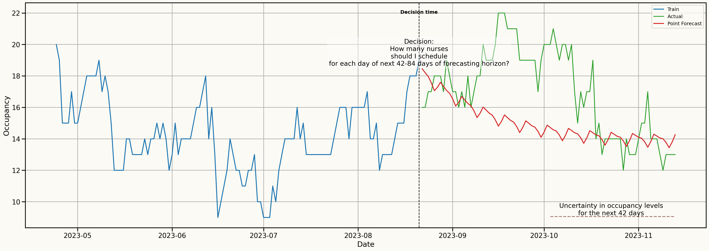
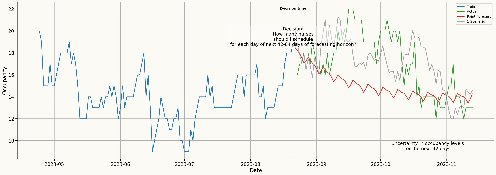
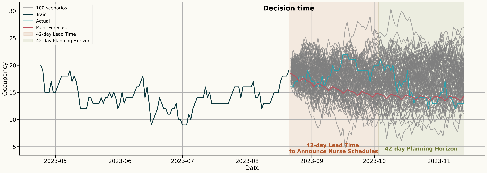
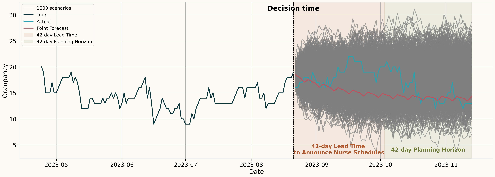

Forecast-Driven Two-Stage Stochastic Programming for Nurse Rostering in Mental Healthcare
Mustafa Aslan, Cardiff University, UK
Lead supervisor: Prof. Bahman Rostami-Tabar
Co-supervisor: Dr. Jeremy Dixon
Data Lab for Social Good, Cardiff University, UK
13 Mar 2026
Outline
- Problem statement and motivation
- Forecasting framework: autoregressive Markov-switching regression (AR-MSR)
- Bridging Forecasts and Decisions: The Role of Uncertainty
- A Holistic Multi-Ward Nurse Rostering framework
- Computational experiments and results
Outline
- Problem statement and motivation
- Forecasting framework: autoregressive Markov-switching regression (AR-MSR)
- Bridging Forecasts and Decisions: The Role of Uncertainty
- A Holistic Multi-Ward Nurse Rostering framework
- Computational experiments and results
The Clinical & Operational Problem
Rising Demand & Vulnerability Inpatient mental health services are highly sensitive to demand fluctuations and are facing severe workforce shortages and rising admissions.
Severe Nurse Burnout: Approximately 65% of psychiatric nurses report high stress and chronic exhaustion
Ineffective Scheduling: Current scheduling policies that fail to account for the highly variable patient acuity and unpredictable occupancy patterns inherent in mental healthcare

The Methodological Problem
Existing scheduling in mental healthcare relies heavily on deterministic models, which completely fail to capture the uncertainties of fluctuating mental health demand.
Traditional forecasting treats occupancy as an isolated time series, missing the abrupt “regime shifts” that are common in volatile mental health time series.
How do we adress these challenges?
| Challenge | Solution |
|---|---|
| Volatile Demand & Regime Shifts | A regime-switching model that identifies hidden states to generate multiple high-fidelity probabilistic scenarios. |
| Nurse Burnout & Ineffective Scheduling | A stochastic programming framework that accounts for forecast distribution of occupancy, absenteeism and enables robust staffing decisions across multiple wards. |
Outline
- Problem statement and motivation
- Bridging Forecasts and Decisions: The Role of Uncertainty
- Forecasting framework: autoregressive Markov-switching regression (AR-MSR)
- A Holistic Multi-Ward Nurse Rostering framework
- Computational experiments and results
The Risk of Point Forecasting

Embracing Uncertainty

Embracing Uncertainty - 3 scenarios

Embracing Uncertainty - 10 scenarios

Embracing Uncertainty - 100 scenarios

Embracing Uncertainty - 1000 scenarios

Outline
- Problem statement and motivation
- Bridging Forecasts and Decisions: The Role of Uncertainty
- Forecasting framework: Autoregressive Markov-switching regression (AR-MSR)
- A Holistic Multi-Ward Nurse Rostering framework
- Computational experiments and results
Forecasting framework: AR-MSR
The proposed AR-MSR is:
\[ O_t \mid (r_t = r) = \beta_{0}^{(r)} + \sum_{i=1}^{p} \beta_{i}^{(r)} \, O_{t-i} + \sum_{m=p+1}^{M} \beta_{m}^{(r)} X_{tm} + \epsilon_t, \]
where \(\epsilon_t \sim \mathcal{N}\!\left(0, \sigma_r^2\right)\) is \(i.i.d.\) noise.
To model regime dynamics, we assume that the latent process \(\{r_t\}\) satisfies the Markov property:
\[ P(r_t = j \mid r_{1:t-1}) = P(r_t = j \mid r_{t-1}), \qquad j \in \mathcal{R}, \; t \ge 2. \]
- The transition probabilities are defined as:
\[ P = \begin{pmatrix} p_{11} & \cdots & p_{1K} \\ \vdots & \ddots & \vdots \\ p_{K1} & \cdots & p_{KK} \end{pmatrix}. \]
- where \(O_t\) is the observed demand at time \(t\),
- \(r_t\) is the unobserved (hidden) regime at time \(t\),
- \(X_{tm}\) are the exogenous predictors.
- \(\beta_{0}^{(r)}\) is the regime-specific intercept
- \(\beta_{i}^{(r)}\) are the autoregressive coefficients associated with the \(i\)-th lag in regime \(r\)
- \(\beta_{m}^{(r)}\) are the coefficients for the exogenous covariates in regime \(r\)
- \(K\) is the total number of regimes. Set of regimes is \(\mathcal{R} = \{1, 2, \ldots, K\}\).
Parameter Estimation of AR-MSR
Model parameters are estimated using the Expectation–Maximization (EM) algorithm, which iteratively refines the parameter vector
\[ \theta = \{\beta^{(r)}, \sigma_r^2, P, \pi \}_{r \in \mathcal{R}} \]
by maximising the likelihood of the observed occupancy time series \(O_{1:T} = (O_1, \ldots, O_T)\).
EM Algorithm
Let \(k\) denote the iteration index. The EM algorithm proceeds as follows:
\[ \begin{aligned} &\textbf{E-step:} \\[4pt] &\quad Q(\theta \mid \theta^{(k)}) = \mathbb{E}_{\,r_{1:T} \mid O_{1:T},\, \theta^{(k)}} \left[ \log p(O_{1:T}, r_{1:T} \mid \theta) \right] \\[14pt] &\textbf{M-step:} \\[4pt] &\quad \theta^{(k+1)} = \arg\max_{\theta}\, Q(\theta \mid \theta^{(k)}) \\[14pt] &\textbf{Iterate until convergence:} \\[4pt] &\quad \theta^{(0)} \;\rightarrow\; \text{E-step} \;\rightarrow\; \text{M-step} \;\rightarrow\; \theta^{(1)} \;\rightarrow\; \cdots \;\rightarrow\; \theta^{(k+1)} \end{aligned} \]
Forecasting with AR-MSR
\(P(r_T = i \mid O_{1:T})\) denote the filtered probability of being in regime \(i\) at time \(T\). The \(h\)-step-ahead regime probabilities are obtained according to
\[ P(r_{T+h} = j \mid O_{1:T}) = \sum_{i=1}^{K} P(r_{T+h-1} = i \mid O_{1:T}) \, p_{ij}, \qquad h \ge 1. \]
Conditional on regime \(r_{T+h} = r\), the \(h\)-step-ahead forecast of the occupancy process is obtained from the regime-specific autoregressive model,
\[ \hat{O}_{T+h}^{(r)} = \beta_{0}^{(r)} + \sum_{i=1}^{p} \beta_{i}^{(r)} \, O_{T+h-i} + \sum_{m=1}^{M} \beta_{p+m}^{(r)} \, X_{T+h,m}, \]
The final point forecast at horizon \(h\) is computed as a probability-weighted average of the regime-specific forecasts,
\[ \hat{O}_{T+h} = \sum_{r=1}^{K} P(r_{T+h} = r \mid O_{1:T}) \, \hat{O}_{T+h}^{(r)}. \]
Outline
- Problem statement and motivation
- Bridging Forecasts and Decisions: The Role of Uncertainty
- Forecasting framework: Autoregressive Markov-switching regression (AR-MSR)
- A Holistic Multi-Ward Nurse Rostering framework
- Computational experiments and results
A Holistic Multi-Ward Nurse Rostering framework
We formulate the HMNR as follows:
\[ \begin{align} \min \; z &= \sum_{j \in \mathcal{W}} c_n^{(j)} \sum_{t \in T} n_t^{(j)} + \mathcal{Q}(\mathbf{n}) \label{eq-hmnr-obj} \\ \text{s.t. }\; & \sum_{j \in \mathcal{W}} n_t^{(j)} \le N_t - \Lambda_{t}, \qquad \forall t \in T, \label{eq-hmnr-cap} \\ & \mathbf{n} = \{ n_t^{(j)} \mid j \in \mathcal{W},\; t \in T \} \in \mathbb{Z}_+^{|\mathcal{W}|\times |T|} \label{eq-hmnr-int} \end{align} \]
where \(\mathcal{Q}(\mathbf{n})\) is the expected recourse function that evaluates the expected understaffing cost across all wards given first-stage staffing decisions \(\mathbf{n}\).
\(\mathcal{Q}(\mathbf{n})\) is defined as
\[ \mathcal{Q}(\mathbf{n}) = \mathbb{E}_{O} \left[ \mathcal{Q}\!\left(\mathbf{n}, O(\omega)\right) \right] \]
and \(\mathcal{Q}(\mathbf{n}, O(\omega))\) is the optimal value of the second-stage recourse problem for a given realization \(O(\omega)\) of the random occupancy vector \(O\):
\[ \begin{align} \mathcal{Q}(\mathbf{n}, O(\omega)) = \min_{u(\omega)} \quad & \sum_{j \in \mathcal{W}} \sum_{t \in T} c_u^{(j)} u_{j,t}(\omega) \label{eq-rec-obj} \\ \text{s.t.} \quad & u_{j,t}(\omega) \ge O_{j,t}(\omega) - \rho_j n_t^{(j)}, \qquad \forall j \in \mathcal{W},\; t \in T \label{eq-rec-short}\\ & u_{j,t}(\omega) \ge 0, \qquad \forall j \in \mathcal{W},\; t \in T \label{eq-rec-nonneg} \end{align} \]
Notation
First-stage problem:
- \(\mathcal{W}\): Set of hospital wards, indexed by \(j\).
- \(T\): Set of time periods (e.g., days) in the planning horizon, indexed by \(t\).
- \(c_n^{(j)}\): Daily cost of scheduling one nurse in ward \(j\).
- \(N_t\): Total nurse pool available on day \(t\).
- \(\lambda\): Mean rate of hospital-level nurse absences per day.
- \(\Lambda_{t}\): Random variable to impose unplanned absent nurses on day \(t\), where \(\Lambda_{t} \sim \text{Poisson}(\lambda)\)
- Decision variable & \(n_t^{(j)}\) & Number of nurses scheduled for ward \(j\) on day \(t\).
Second-stage recourse problem:
- \(\Omega^{j}\): Set of occupancy scenarios for ward \(j\).
- \(\omega\): Scenario (random parameter) representing a realization of occupancy uncertainty.
- \(\rho_j\): Number of patients a single nurse can attend to in ward \(j\).
- \(c_u^{(j)}\): Associated penalty cost per understaffed patient for ward \(j\).
- \(s\): Index for occupancy scenarios, \(s\in\mathcal{S}\).
- \(O_{j,t}(\omega)\): Occupied beds in ward \(j\) on day \(t\) under scenario \(\omega\in\Omega^{j}\).
- \(u_{j,t}(\omega)\): The number of understaffed patients in ward \(j\) at time \(t\) under scenario \(\omega\in\Omega^{j}\).
Solution method for HMNR
- Deterministic equivalent reformulation of the two-stage stochastic program is obtained sample average approximation (SAA) using a finite set of occupancy scenarios probabilistic forecasts.
- By replacing the expected recourse function with its sample average over the scenario set \(\mathcal{S}\), we obtain the following mixed-integer linear program (MILP):
\[ \begin{aligned} \min \; z &= c_n \sum_{j \in \mathcal{W}} \sum_{t \in T} n_t^{(j)} + \sum_{s \in \mathcal{S}} p_s \sum_{j \in \mathcal{W}} \sum_{t \in T} c_u \, u_{j,s,t} \\ \text{s.t. }\; & \sum_{j \in \mathcal{W}} n_t^{(j)} \le N_t - \Lambda_{t}, \qquad \forall t \in T, \\ & u_{j,s,t} \ge O_{j,t}^{s} - \rho_j \, n_t^{(j)}, \qquad \forall j \in \mathcal{W},\; t \in T,\; s \in \mathcal{S}, \\ & u_{j,s,t} \ge 0, \qquad \forall j \in \mathcal{W},\; t \in T,\; s \in \mathcal{S}, \\ & \mathbf{n}=\{n_t^{(j)}\mid j\in\mathcal{W},\, t\in T\}\in\mathbb{Z}_+^{|\mathcal{W}|\times|T|}. \end{aligned} \]
Implementation Details
The deterministic equivalent model is implemented in Pyomo and solved using the Gurobi optimization solver in Python.
Outline
- Problem statement and motivation
- Bridging Forecasts and Decisions: The Role of Uncertainty
- Forecasting framework: Autoregressive Markov-switching regression (AR-MSR)
- A Holistic Multi-Ward Nurse Rostering framework
- Computational experiments and results
Experimental Design & Data
Study Period: 7+ years of daily occupancy (2018–2025).
Scope: 7 UK Mental Health Wards (6 Acute, 1 Rehab)
Predictors: Lags, seasonality (DoW, Month), and Public Holidays.
Evaluation: * Two equal 360-day periods
- The first for hyperparameter tuning and empirical forecast error extraction
- The second as an holdout test set
Optimization Constraints:
Staffing Pool: 24 Nurses.
Mean absences: 1 nurses/day (Poisson distributed).
Ratios: 5:1 (Acute), 4:1 (Rehab).
Costs: 200 (Nurse cost) vs. 300 (Penalty).
Simulations: 1,000 scenarios via correlated bootstrap.
Benchmark models
| Category | Model / Approach | Key Characteristics |
|---|---|---|
| Proposed | AR-MSR | Regime-switching dynamics |
| Statistical | Naive, ETS, ARIMA | Classic time-series baselines |
| Machine Learning | Random Forest, XGBoost, LightGBM | Non-linear feature ensembles |
| Classical Regression | Linear & Lasso Regression | Linear&Regularized linear baselines |
| Foundational method | TimeGPT | Transformer-based architecture |
Scenario Generation: Correlated Bootstrapping
We account for the fact that forecast errors are not \(i.i.d.\) across time (forecasting horizon)
The Mathematical Approach
- For each test origin \(t = 1, \dots, 360\), let
\[ e_{t,h} = y_{t+h} - \hat{y}_{t+h}, \qquad h = 1, \dots, 84, \]
- Denote the forecast error at horizon \(h\). Define the error vector
\[ \mathbf{e}_t = (e_{t+1}, e_{t+2}, \dots, e_{t+84})^\top \in \mathbb{R}^{84}. \]
- The mean vector and covariance matrix are estimated as
\[ \mu = \frac{1}{360} \sum_{t=1}^{360} \mathbf{e}_t, \qquad \Sigma = \frac{1}{359} \sum_{t=1}^{360} (\mathbf{e}_t - \mu)(\mathbf{e}_t - \mu)^\top. \]
- We approximate the joint error distribution by
\[ \mathbf{E} \sim \mathcal{N}(\mu, \Sigma). \]
- For each origin, \(S=1{,}000\) correlated error samples are drawn as
\[ \mathbf{e}^{(s)} \sim \mathcal{N}(\mu, \Sigma), \qquad s = 1, \dots, S. \]
- Let \(\hat{\mathbf{y}}_t\) denote the vector of point forecasts. The simulated occupancy scenarios are then given by
\[ \mathbf{y}^{(s)}_t = \hat{\mathbf{y}}_t + \mathbf{e}^{(s)}. \]
Performance Evaluation Metrics
1. Forecasting Accuracy
Evaluating the quality of the “Input”
RMSE: Point forecast precision. \[ \text{RMSE} = \sqrt{\frac{1}{H} \sum_{t=1}^{H} (y_t - \hat{y}_t)^2} \]
Pinball Loss (PB): Distribution calibration. \[ \text{PB}_q = \frac{1}{H} \sum_{t=1}^{H} \rho_q(y_t - \hat{y}_t^q) \]
2. Operational Utility
Evaluating the “Decision Impact”
Avg. Understaffing (AU): \[ \text{AU}(\tau) = \frac{1}{H} \sum_{t = \tau+1}^{\tau+H} [ O_t - \rho_j n^{*}_{j,t} ]^+ \]
Value of Stochastic Solution (VSS): \[ \text{VSS} = \text{EEV} - \mathbb{E}_{O} [ z(\mathbf{n}^{*}, O) ] \]
where EEV is the expected cost of the deterministic solution: \(\text{EEV} = \mathbb{E}_{O} \left[ z\left( \bar n(\bar O), O \right) \right]\)
Forecasting performance
| model | Ward A | Ward B | Ward C | Ward D | Ward E | Ward F | Ward G | overall |
|---|---|---|---|---|---|---|---|---|
| Point Forecast (RMSE) | ||||||||
| AR-MSR | 3.37 | 4.95 | 3.26 | 3.91 | 2.80 | 3.78 | 2.11 | 3.45 |
| LASSO | 3.79 | 5.34 | 4.08 | 2.32 | 3.07 | 3.69 | 2.08 | 3.48 |
| LR | 3.62 | 5.66 | 3.70 | 2.20 | 3.34 | 3.98 | 2.08 | 3.51 |
| RF | 3.96 | 5.07 | 4.38 | 2.64 | 2.87 | 4.09 | 2.10 | 3.59 |
| ETS | 3.70 | 5.49 | 3.89 | 2.61 | 3.60 | 3.95 | 2.05 | 3.61 |
| TimeGPT | 4.10 | 5.51 | 3.78 | 2.76 | 3.41 | 3.66 | 2.51 | 3.67 |
| ARIMA | 3.66 | 5.73 | 4.06 | 2.46 | 3.73 | 3.98 | 2.20 | 3.69 |
| NAIVE | 4.26 | 5.40 | 3.89 | 2.90 | 3.45 | 3.71 | 2.58 | 3.74 |
| XGB | 4.22 | 5.25 | 5.15 | 2.57 | 3.64 | 3.94 | 2.01 | 3.83 |
| LGB | 3.98 | 5.50 | 4.40 | 4.09 | 3.29 | 3.86 | 2.00 | 3.87 |
| Probabilistic (Pinball Loss) | ||||||||
| AR-MSR | 1.05 | 1.53 | 0.96 | 0.87 | 0.87 | 1.22 | 0.60 | 1.01 |
| LR | 1.01 | 1.50 | 0.96 | 0.97 | 0.85 | 1.29 | 0.61 | 1.03 |
| LASSO | 1.14 | 1.61 | 1.06 | 0.91 | 0.87 | 1.19 | 0.61 | 1.06 |
| RF | 1.25 | 1.64 | 1.22 | 0.92 | 0.87 | 1.35 | 0.64 | 1.13 |
| XGB | 1.23 | 1.68 | 1.33 | 0.81 | 0.99 | 1.35 | 0.63 | 1.15 |
| ETS | 1.25 | 1.81 | 1.11 | 0.94 | 1.09 | 1.35 | 0.64 | 1.17 |
| NAIVE | 1.38 | 1.75 | 1.22 | 0.97 | 1.10 | 1.13 | 0.80 | 1.19 |
| ARIMA | 1.16 | 1.87 | 1.28 | 1.00 | 1.19 | 1.21 | 0.67 | 1.20 |
| LGB | 1.19 | 1.83 | 1.19 | 1.41 | 1.00 | 1.30 | 0.63 | 1.22 |
| TimeGPT | 1.45 | 1.96 | 1.33 | 0.98 | 1.24 | 1.29 | 0.87 | 1.30 |
| Permutation Entropy | ||||||||
| 0.76 | 0.72 | 0.71 | 0.66 | 0.61 | 0.61 | 0.56 | 0.66 | |
Operational performance
| model | Ward A | Ward B | Ward C | Ward D | Ward E | Ward F | Ward G | overall |
|---|---|---|---|---|---|---|---|---|
| Average Understaffed Number of Patients | ||||||||
| AR-MSR | 0.12 | 1.62 | 0.42 | 0.01 | 0.40 | 0.98 | 0.16 | 3.71 |
| LR | 0.21 | 1.71 | 0.51 | 0.00 | 0.24 | 1.17 | 0.16 | 4.01 |
| LASSO | 0.43 | 1.57 | 0.94 | 0.01 | 0.16 | 1.28 | 0.16 | 4.54 |
| ARIMA | 0.73 | 1.74 | 0.35 | 0.02 | 0.54 | 1.25 | 0.31 | 4.94 |
| ETS | 0.27 | 1.14 | 0.68 | 0.01 | 1.37 | 1.60 | 0.16 | 5.23 |
| RF | 0.44 | 1.72 | 1.23 | 0.07 | 0.47 | 1.22 | 0.14 | 5.29 |
| NAIVE | 1.14 | 1.58 | 0.41 | 0.11 | 0.53 | 1.21 | 0.45 | 5.43 |
| XGB | 0.60 | 1.23 | 1.39 | 0.02 | 0.74 | 1.60 | 0.15 | 5.73 |
| LGB | 0.56 | 1.62 | 1.28 | 0.01 | 0.90 | 1.60 | 0.16 | 6.14 |
| AR-MSR-PointForecasts | 1.17 | 3.58 | 1.34 | 0.14 | 1.08 | 1.60 | 0.15 | 9.06 |
| Cost of using model's solution | ||||||||
| AR-MSR | 834 | 1334 | 836 | 658 | 670 | 823 | 448 | 5602 |
| LASSO | 883 | 1319 | 932 | 676 | 616 | 841 | 447 | 5714 |
| LR | 849 | 1340 | 851 | 740 | 642 | 870 | 452 | 5744 |
| ETS | 859 | 1261 | 884 | 650 | 811 | 879 | 447 | 5791 |
| RF | 883 | 1330 | 988 | 654 | 676 | 837 | 453 | 5821 |
| XGB | 910 | 1263 | 1017 | 633 | 745 | 879 | 446 | 5894 |
| ARIMA | 933 | 1399 | 909 | 700 | 726 | 845 | 494 | 6006 |
| NAIVE | 1042 | 1377 | 903 | 661 | 730 | 818 | 555 | 6086 |
| LGB | 899 | 1354 | 1005 | 766 | 750 | 879 | 448 | 6102 |
| AR-MSR-PointForecasts | 1023 | 1747 | 1007 | 613 | 769 | 879 | 446 | 6483 |
Understaffing Reliability

Any questions or thoughts? 💬